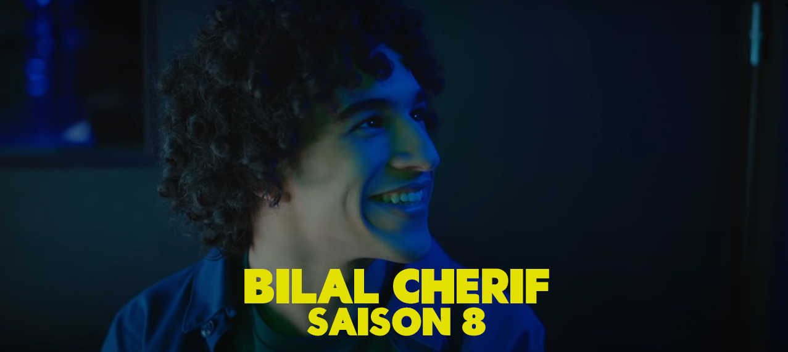
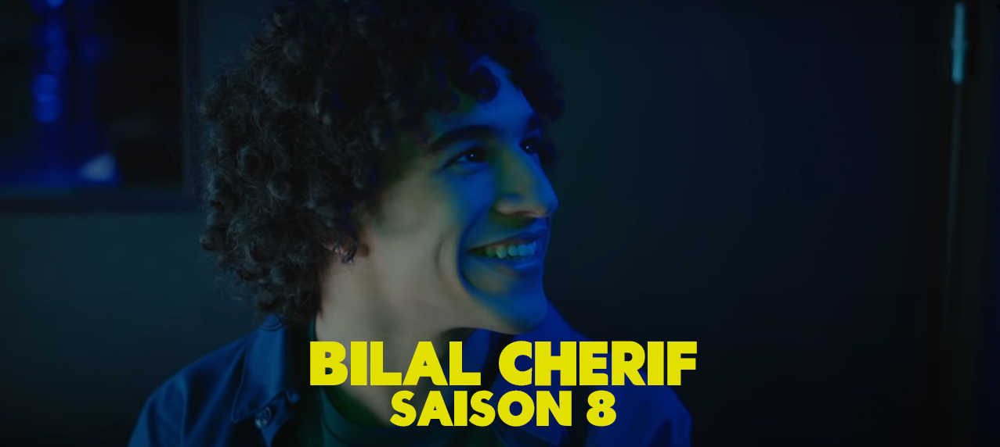
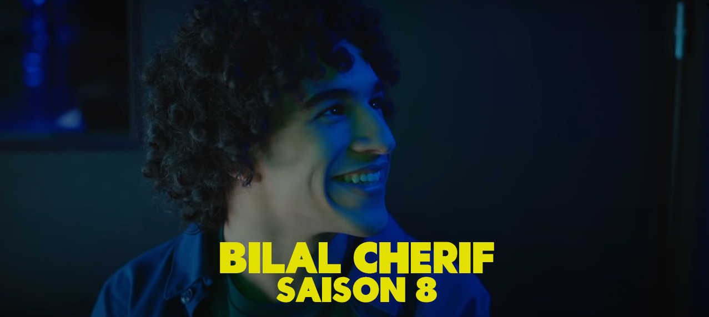
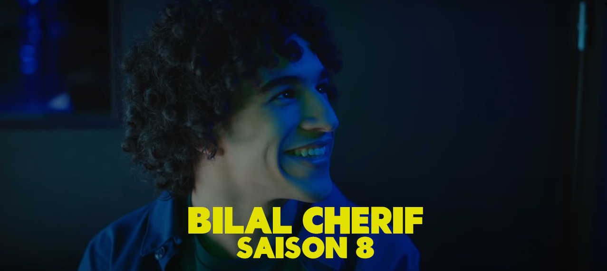

 

The New Gen consists of a Teenage Friend Group called La MIF and is portraited by Flavie Delangle as Lola Lecomte, Ayumi Roux as Maya Etienne, Lucie Fagedet as Tiffany Prigent, Louise Malek as Jo Benezra, Sohan Pague as Max Bernini, Khalil Ben Gharbia as Bilal Cherif and Abdallah Charki as Redouane Bedia.


Maya Etienne
Maya Etienne is a main character in the second generation of Skam France. She is the central character of the ninth season and a main character in the sixth, seventh and eighth seasons. She is a member of La Mif and Lola Lecomte's ex-girlfriend. After dropping out of high school, she worked at a supermarket. She is an original character in Skam France.
Lola Lecomte
Lola Lecomte is a main character in the second generation of Skam France. She is the central character of the sixth season, a main character in the seventh, eighth and ninth seasons, and a guest character in the fifth season. Lola is a member of La Mif, and is Maya Etienne's ex-girlfriend. She is a student at Dorian High School. She is an original character in Skam France.
Tiffany Prigent
Tiffany "Tiff" Prigent is a main character in the second generation of Skam France. She is the central character in the seventh season, a main character in the eighth and ninth seasons and a recurring character in the sixth season. Tiff is member of The Trio and La Mif. She's Moïra Prigent's mother and Max Bernini's girlfriend. She is a student at Dorian High School. She is an original character in Skam France.

Max Bernini
Max Bernini is a main character in the second generation of Skam France. He is a main character in the sixth, seventh, eighth and ninth seasons. Max is a member of La Mif and Tiffany Prigent's boyfriend. He is a student at Dorian High School. He is an original character in Skam France.

Jo Benezra
Jocelyne "Jo" Benezra is a main character in the second generation of Skam France. She is a main character in the sixth, seventh, eighth and ninth seasons. Jo is a member of La Mif and Bilal Cherif's girlfriend. She is a student at Dorian High School. She is an original character in Skam France.
Bilal Cherif
Bilal Cherif is a main character in the second generation of Skam France. He the central character of the eighth season and a main character in the seventh and ninth seasons. He is a member of La Mif and Jo Benezra's boyfriend. He is a student at Dorian High School. He is an original character in Skam France.
Redouane Bedia
Redouane Bedia is a main character in the second generation of Skam France. He is a main character in the seventh, eighth and ninth seasons. He is a member of La Mif and a student at Dorian High School. He is an original character in Skam France.
.png "logo")